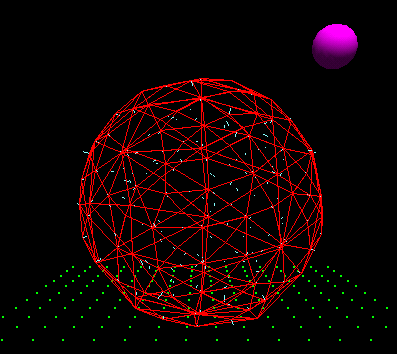

Ventajas de “Cloud Computing”

Bajo coste. Productos gratuitos o pagos mensuales fijos por utilización, sin costes adicionales, dado que no hay que invertir en gran infraestructura, ni en licencias.
Seguridad. Los datos siempre están seguros (lee la política de seguridad de Debitoor).
No hay necesidad de poseer una gran capacidad de almacenamiento.
Mayor rapidez en el trabajo al estar basado en la web.
Información a tiempo real.
Fuerte inversión en innovación.
Acceso a toda la información.
Acceso cuando quieras y donde quieras, sólo con una conexión a Internet.